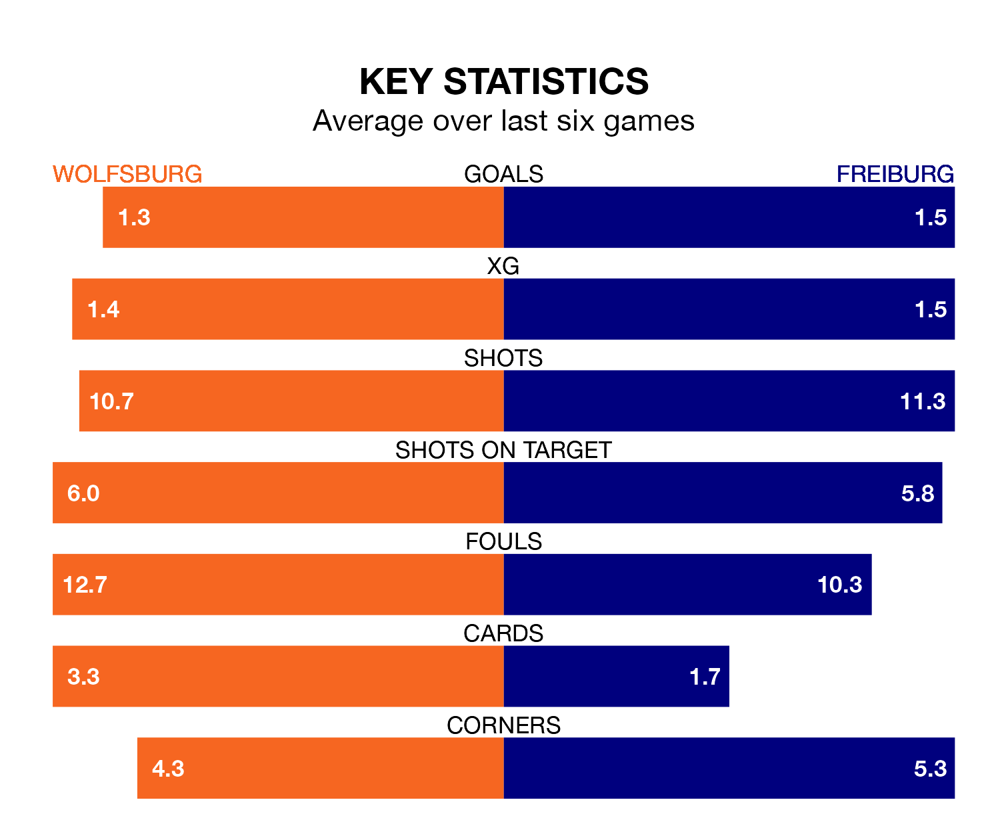

Wolfsburg are on a poor run ahead of hosting Freiburg at VOLKSWAGEN ARENA on Saturday, with just four points collected from their last six games.
Wolfsburg have picked up one win and one draw in their last six Bundesliga games, and face a Freiburg side whose last six games have brought two wins and two draws.
In the last 10 years, Wolfsburg and Freiburg have played each other on 18 occasions. Wolfsburg won eight of them, Freiburg six, and they drew four times.
On average, Wolfsburg scored 1.9 goals and Freiburg 1.2 in those matches.
Their last meeting was on May 19, when Freiburg won 2-0 at home.
In Jonas Wind, Wolfsburg have one of the league's most on-form strikers so far this season. He has notched nine goals in 13 appearances, to sit fourth in the scoring charts.
Freiburg's top scorers, with three goals each, are Vincenzo Grifo and Lucas Höler.
With 16 goals in 13 games so far this season, the away team are scoring at below the league average rate with 1.2 goals per game. And they are conceding more than average, letting in 23 goals at a rate of 1.8 per game.
The hosts are also below average scorers, with 1.4 goals per game, compared to a league average of 1.7. They have conceded 1.8 goals per game.
Wolfsburg are 11th in the table after 13 games, of which they have won five and drawn one, earning 16 points.
Freiburg are three places ahead of Wolfsburg in eighth, with five wins and three draws putting them on 18 points.
Wolfsburg's last match was on December 2, a 3-1 loss against Bochum, with Mattias Svanberg getting the goal for Wolfsburg.
Freiburg beat Mainz 05 1-0 last time out, on Sunday, with Michael Gregoritsch on the scoresheet.
